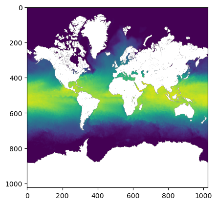

import json
import cf_xarray # noqa
import dask.array as da
import matplotlib.pyplot as plt
import morecantile
import numpy as np
import panel
import rasterio
import rioxarray # noqa
import xarray as xr
import zarr
# For zarr_format=2 encoding
from numcodecs import Zstd
from rio_tiler.io.xarray import XarrayReaderCreate a GeoZarr with multi-scales containing the WebMercatorQuad TMS
Load example dataset from NetCDF into Xarray
fp_base = "20020601090000-JPL-L4_GHRSST-SSTfnd-MUR-GLOB-v02.0-fv04.1"
input = f"../data/{fp_base}.nc"
v2_output = f"../output/v2/{fp_base}_multiscales.zarr"ds = xr.open_dataset(input)Check that all variables have a CF-compliant standard name
standard_names = ds.cf.standard_names
vars_with_standard_names = [v[0] for v in ds.cf.standard_names.values()]
compliant_vars = []
non_complaint_vars = []
for var in ds.variables:
if var not in vars_with_standard_names:
non_complaint_vars.append(var)
else:
compliant_vars.append(var)
assert ds[var].attrs["standard_name"]
print(f"These variables do NOT have a CF-compliant standard name: {non_complaint_vars}")
print(f"These variables have a CF-compliant standard name: {compliant_vars}")These variables do NOT have a CF-compliant standard name: ['analysis_error', 'mask']
These variables have a CF-compliant standard name: ['time', 'lat', 'lon', 'analysed_sst', 'sea_ice_fraction']Not all the variables in this dataset have a CF-compliant standard name. See https://github.com/zarr-developers/geozarr-spec/issues/60 for a recommendation that CF-compliant standard names should be a “SHOULD” rather than a “MUST” condition in the GeoZarr spec. For now, let’s subset to the variables that do use CF-compliant standard names.
ds = ds[compliant_vars]Assign CRS information to an auxiliary variable using rioxarray
ds = ds.rio.write_crs("epsg:4326")
# Specify which variable contains CRS information using grid_mapping
for var in ds.data_vars:
ds[var].attrs["grid_mapping"] = "spatial_ref"Specify that the analysed_sst variable will contain multiscales up to zoom level 2
ds["analysed_sst"].attrs["multiscales"] = {
"tile_matrix_set": "WebMercatorQuad",
"resampling_method": "nearest",
"tile_matrix_limits": {"0": {}, "1": {}, "2": {}},
}Specify encoding and write to Zarr V2 format
spatial_chunk = 4096
compressor = Zstd(level=1)
encoding = {
"analysed_sst": {
"chunks": (1, spatial_chunk, spatial_chunk),
"compressor": compressor,
},
"sea_ice_fraction": {
"chunks": (1, spatial_chunk, spatial_chunk),
"compressor": compressor,
},
}
ds.to_zarr(v2_output, mode="w", consolidated=True, zarr_format=2, encoding=encoding)<xarray.backends.zarr.ZarrStore at 0x110936dd0>Create an empty xarray Dataset for each zoom level
tms = morecantile.tms.get("WebMercatorQuad")
tileWidth = 256
var = "analysed_sst"
dataset_length = ds[var].sizes["time"]
zoom_levels = [0, 1, 2]
def create_overview_template(var, standard_name, *, tileWidth, dataset_length, zoom):
width = 2**zoom * tileWidth
overview_da = xr.DataArray(
da.empty(
shape=(dataset_length, width, width),
dtype=np.float32,
chunks=(1, tileWidth, tileWidth),
),
dims=ds[var].dims,
)
template = overview_da.to_dataset(name=var)
template = template.rio.write_crs("epsg:3857")
# Convert transform to GDAL's format
transform = rasterio.transform.from_bounds(*tms.xy_bbox, width, width)
transform = transform.to_gdal()
# Convert transform to space separated string
transform = " ".join([str(i) for i in transform])
# Save as an attribute in the `spatial_ref` variable
template["spatial_ref"].attrs["GeoTransform"] = transform
template[var].attrs["grid_mapping"] = "spatial_ref"
template[var].attrs["standard_name"] = standard_name
return templateWrite overview template (with no data) to zarr store
for zoom in zoom_levels:
template = create_overview_template(
var,
ds[var].attrs["standard_name"],
tileWidth=tileWidth,
dataset_length=dataset_length,
zoom=zoom,
)
template.to_zarr(
v2_output,
group=str(zoom),
compute=False,
consolidated=False,
mode="w",
zarr_format=2,
)Populate Zarr array with overview data
def populate_tile_data(dst: XarrayReader, za: zarr.Array, x: int, y: int, zoom: int):
x_start = x * tileWidth
x_stop = (x + 1) * tileWidth
y_start = y * tileWidth
y_stop = (y + 1) * tileWidth
tile = dst.tile(x, y, zoom).data
za[:, y_start:y_stop, x_start:x_stop] = tilematrices = tms.tileMatrices
with XarrayReader(ds[var]) as dst:
for zoom in zoom_levels:
tm = matrices[zoom]
za = zarr.open_array(v2_output, path=f"{zoom}/{var}", zarr_version=2)
for x in range(tm.matrixWidth):
for y in range(tm.matrixHeight):
populate_tile_data(dst, za, x, y, zoom)Consolidate metadata at the root of the Zarr store
zarr.consolidate_metadata(v2_output)<Group file://../output/v2/20020601090000-JPL-L4_GHRSST-SSTfnd-MUR-GLOB-v02.0-fv04.1_multiscales.zarr>Plot one of the zoom levels
var = "analysed_sst"
zoom = 2
arr = zarr.open_array(v2_output, path=f"{zoom}/{var}")
arr = arr[:]
plt.imshow(arr.squeeze())
Inspect Zarr V2 store
First, let’s look at the structure of Zarr arrays using zarr’s Group.tree() method
root = zarr.open_group(v2_output)
root.tree()/ ├── 0 │ ├── analysed_sst (1, 256, 256) float32 │ └── spatial_ref () int64 ├── 1 │ ├── analysed_sst (1, 512, 512) float32 │ └── spatial_ref () int64 ├── 2 │ ├── analysed_sst (1, 1024, 1024) float32 │ └── spatial_ref () int64 ├── analysed_sst (1, 17999, 36000) float64 ├── lat (17999,) float32 ├── lon (36000,) float32 ├── sea_ice_fraction (1, 17999, 36000) float64 ├── spatial_ref () int64 └── time (1,) int32
Second, let’s look at what’s actually recorded in the Zarr metadata using the consolidated metadata at the root of the Zarr store.
In order to match valid JSON, we convert the nan fill_value entries to “nan”.
Key observations
- For each array, metadata is stored under ‘.zattrs’
- All arrays contain a
.zattrs/standard_name - The root group specifies that the metadata follows CF conventions, which should be validated.
.zattrs/_ARRAY_DIMENSIONSforlat,lon, andtimecontains a list with only the the name of the array, indicating that they are coordinates variables..zattrs/_ARRAY_DIMENSIONSforspatial_refcontains an empty list, indicating that it is an auxiliary coordinate..zattrs/_ARRAY_DIMENSIONSforanalysed_sst,sea_ice_fractioncontain a list referring to other arrays, indicating that they are data variables rather than coordinate variables..zattrs/grid_mappingforanalysed_sst,sea_ice_fractionis"spatial_ref"indicating that CRS information is included in that auxiliary variable’s metadata.spatial_ref/.zattrscontains the OGC WKT for the CRS..zattrs/multiscalescontains information about the multiscales, specifying that they are aWebMercatorQuadTMS created usingnearestresampling- The
0,1, and2groups contain GeoZarr compliant overviews for theanalysed_sstvariable, including the requiredstandard_nameandgrid_mappingattributes.
panel.extension()
consolidated_metadata_file = f"{v2_output}/.zmetadata"
with open(consolidated_metadata_file) as f:
metadata = json.load(f)["metadata"]
metadata["sea_ice_fraction/.zarray"]["fill_value"] = str(
metadata["sea_ice_fraction/.zarray"]["fill_value"]
)
metadata["analysed_sst/.zarray"]["fill_value"] = str(
metadata["sea_ice_fraction/.zarray"]["fill_value"]
)
panel.pane.JSON(metadata, name="JSON")